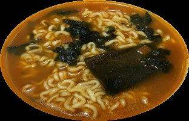
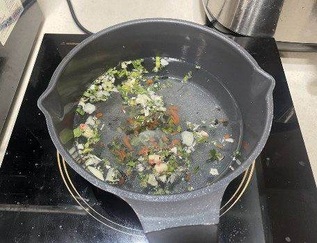
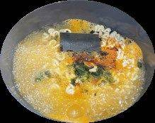
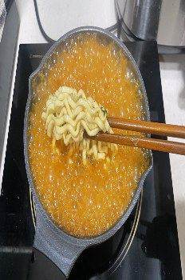
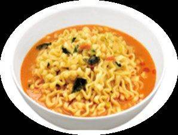

| 메뉴명 | 얼큰 너구리 |
|---|---|
| 판매가격 | 4,500원 |
| 원재료 | 얼큰 너구리 |
| 사용 부자재 | 라면용기 |
| 메뉴특징 | 오동통 면발에 다시마가 들어가 얼큰한 국물이 끝내주는 라면 |




※ 기존 라면조리기:
[일반라면]모드로 조리하기
※ 토핑 추가 ※
▶계란: 타이머 1분 남았을 때 넣기
▶만두: 4개, 물이 끓어서 면을 넣을 때, 함께 넣기
▶치즈: 마지막에 올리기 (치즈를 먼저 꺼내 놓지 않기)
※ 제조 후 최대한 빨리 제공할 것.
※ 모드 설정법: 기계 및 위생 매뉴얼 <라면조리기 사용 매뉴얼> 페이지 참조